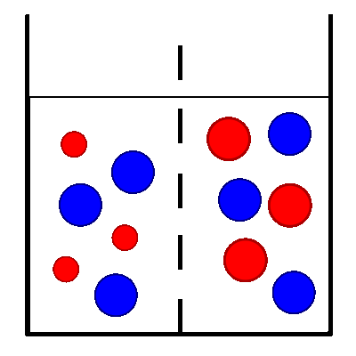

Erregungsleitung (elektrisch): Chemische Grundlagen
Selektiv permeable Membran

Kaliumionen (mit Hydrathülle kleiner);
Natriumionen (mit Hydrathülle größer);
Chloridionen (in wässriger Lösung);
- Die selektiv permeable Membran ist nur für die (mit der Hydrathülle) kleineren Kaliumionen durchlässig, nicht jedoch für Natriumionen.
- Die Wassermoleküle können ebenfalls ungehindert durch die Poren der selektiv permeablen Membran hindurchwandern. Da das osmotische Potenzial allerdings in beiden Kammern gleich ist, ändert sich die Wasserverteilung nicht und es baut sich auch kein (osmotischer) Druck auf.
- Die Kaliumionen diffundieren bevorzugt in die rechte Kammer, um das Konzentrationsgefälle auszugleichen.
- Dadurch entsteht in der linken Kammer (entspricht Zellinneres) ein negativer Ladungsüberschuss, in der rechten Kammer (entspricht Zelläußeres) ein positiver Ladungsüberschuss.
- Es stellt sich ein dynamisches Gleichgewicht der Kaliumionenverteilung ein, bei dem sich das Konzentrationsgefälle (höhere Kaliumionenkonzentration links/im Zellinneren) und das gegenläufige Ladungsgefälle (positiver Ladungsüberschuss rechts/im Zelläußeren) gegenseitig ausgleichen und pro Zeiteinheit die gleiche Menge an Kaliumionen nach rechts und nach links wandern.
Externe Links
Selektive Permeabilität